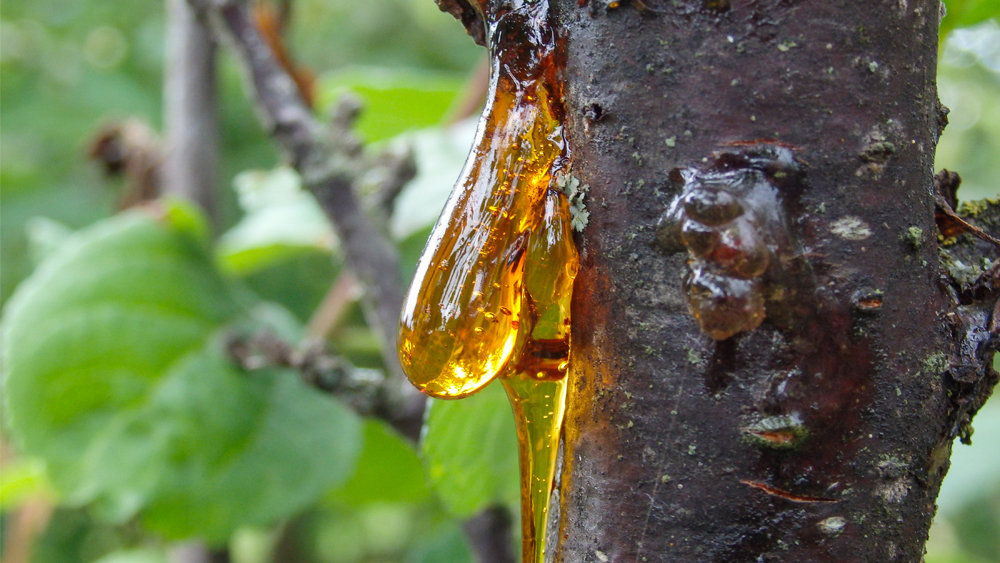

The fact is that dinosaurs roamed on Earth millions of years ago, before even the first human being was ever born. Then how come so much knowledge exists regarding dinosaurs? The answer lies in the traces left by dinosaurs which help scientists investigate their lives.
Fossils are one of the most valuable sources of information. Fossils are defined as the remains of animals or plants preserved in rocks for millions of years. In addition to bones and other body parts, fossils may include tracks and feces. Fossils enable us to learn about the physical appearance of dinosaurs and their behavior.
Yet another awesome method of learning about the past includes studying amber. Amber is tree resin that hardens and may contain fossils of living things such as insects or even plants. On occasions, these organisms are preserved intact within the amber, giving us an idea of what existed back then. It is as good as going back in time!

| Dinosaur Evidence | What It Shows | Example |
|---|---|---|
| Fossils | Body structure and size | Dinosaur bones |
| Amber | Small details of ancient life | Insects trapped in resin |
| Footprints | Movement and behavior | Dinosaur tracks |
| Rock Layers | Age of fossils | Sediment layers |
Learn more about fossils at the Natural History Museum Fossil Guide .